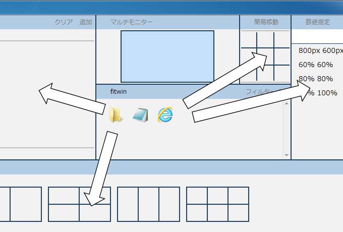
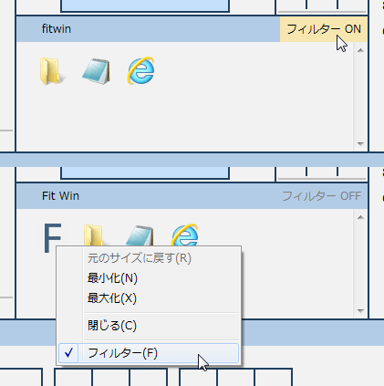
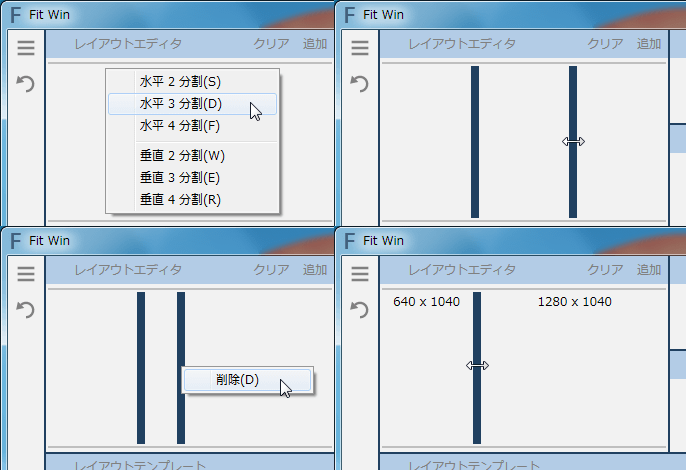
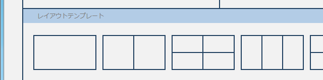
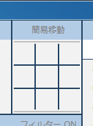
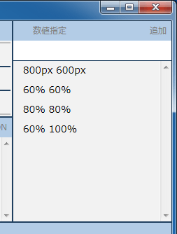
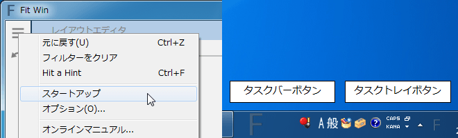
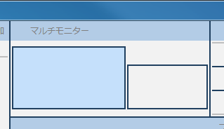
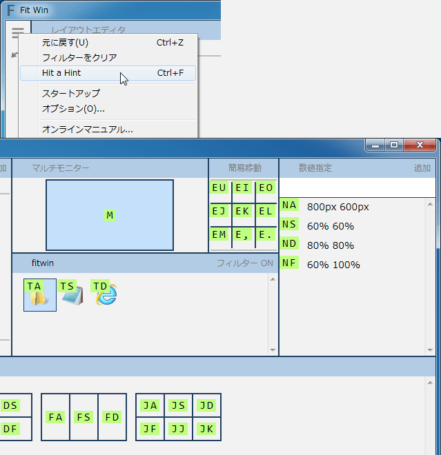
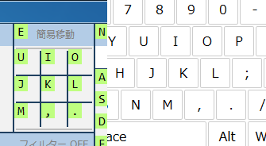

Fit Win
Fit Win（フィットウィン）は複数のウィンドウを並べたり、移動・サイズ変更できる Windows 用フリーソフトです。
- マウスをドラッグ＆ドロップするだけで簡単に素早く
- マルチディスプレイや 4K ディスプレイにたくさんのウィンドウを効率よく配置
- Hit a Hint を使ったキーボード操作も
ダウンロード v1.2 2015/03/14
動作環境は Windows 8/7 32/64bit ・ .NET Framework 4.5 ・ Internet Explorer 10 以上です。
マニュアル
アプリの一覧
起動しているアプリケーションの一覧です。

- ウィンドウを移動・サイズ変更するには、アイコンを周囲（レイアウトエディタ・レイアウトテンプレート・簡易移動・数値指定）にドラッグ＆ドロップします
- ウィンドウをアクティブにするにはアイコンをクリックします
- ウィンドウを操作するにはアイコンを右クリックします
フィルター
指定したアプリを非表示にできます。最大化でしか使わない・電卓はモニターの中央で固定など、移動・サイズ変更しない・できないアプリを非表示にできます。

レイアウト
ウィンドウを敷き詰められます。レイアウト（ウィンドウをどのように並べるのか）をエディタで編集し、よく使うレイアウトをテンプレートで一覧できます。
- ウィンドウを敷き詰めるには、アプリアイコンをエディタ・テンプレートにドラッグ＆ドロップします
レイアウトエディタ

- 分割するにはエディタを右クリックします
- サイズ変更するにはボーダーをドラッグします
- ボーダーを削除するにはボーダーを右クリックします
- 追加ボタンでテンプレートに追加できます
- クリアボタンでクリアできます
- 1px 単位でサイズ変更するにはボーダー上でマウスホイールします（オプションから有効にする必要があります）
レイアウトテンプレート

- テンプレートをクリックするとエディタにコピーされるので編集できます
- 並び替えるにはテンプレートをドラッグします
- 削除するにはテンプレートを右クリックします
簡易移動

- ウィンドウを右上や中央などの単純な位置へサイズ変更せずに移動するには、アプリアイコンを簡易移動にドラッグ＆ドロップします
数値指定

ウィンドウの位置やサイズを数値指定して柔軟に移動・サイズ変更できます。しかし数値指定のルールが独特なので使いこなすのは難しいかもしれません。
- ウィンドウを移動・サイズ変更するには、アプリアイコンを数値指定（テキストボックスを含む）にドラッグ＆ドロップします
- テキストボックスに入力して追加ボタンもしくは Enter で追加できます
- クリックするとテキストボックスにコピーされるので編集できます
- 並び替えるにはドラッグします
- 削除するには右クリックします
数値指定のルール
X 座標, Y 座標, 幅, 高さ, 表示名のように 5 つの要素をカンマで区切ります。
- X 座標・ Y 座標が、
- 整数のときプライマリモニターの左上を原点とする座標系における位置を表します
- 0.0 以上 1.0 以下の少数のときフォーカスモニターの一端を 0 、もう一端を 1 とした割合を表します
- 省略されると元の位置を変更しません
- 幅・高さが、
- 正整数のときピクセルを表します
- 0.0 以上 1.0 以下の少数のときフォーカスモニターの幅と高さを 1 とした割合を表します
- 省略されると元のサイズを変更しません
- 表示名が、
- 数値指定に表示されます
- 省略されると
X 座標, Y 座標, 幅, 高さが表示されます
整数・少数・省略は自由に組み合わせられます。また 0 と 0.0 、 1 と 1.0 は意味が異なるので気をつけてください。
表示・非表示
Fit Win は常駐アプリなので使うときのみ表示して、使わないときには非表示で起動したままにします。そのためスタートアップへの登録をおすすめします。

- 表示するには、
- タスクトレイボタンをダブルクリックします
- fitwin.exe をタスクバーに表示してタスクバーボタンをクリックします
- fitwin.exe をタスクバーに表示して Win + 数字キーを押します
- fitwin.exe を実行します（ランチャーに組み込めます）
- 非表示にするには、閉じる・最小化する・ Esc キーを押します
- 素早くウィンドウを移動・サイズ変更するには、左 Alt キーを押したまま移動・サイズ変更したいウィンドウをドラッグします。すると Fit Win が表示されるのでそのままドロップできます。そして左 Alt キーを離すと Fit Win が非表示になります。
マルチモニター

モニターの一覧です。シングルモニターでは必要ないのでオプションから非表示にしましょう。
フォーカスモニター
背景が水色のモニターをフォーカスモニターと呼びます。複数あるモニターのうちどのモニターに Fit Win がウィンドウを移動するのかというと、フォーカスモニターに移動します。
- フォーカスモニターを変更するには、
- モニターをクリックします
- マルチモニター上でマウスホイールします（アプリアイコンをドラッグ中でも可能です）
- Space ・ Shift + Space キーを押します
キーボード
Hit a Hint を使うとマウスを使わずにキーボードのみでウィンドウを移動・サイズ変更できます。メニューから Hit a Hint に切り替えましょう。

例えばメモ帳をモニター右 3 分の 1 に移動・サイズ変更するときにはTSFDと入力します。
背景がキミドリ色のアルファベット列をヒント、背景が水色のアプリアイコンをフォーカスアイコンと呼びます。
- レイアウトテンプレート・簡易移動・数値指定のヒントを入力すると、フォーカスアイコンをドラッグ＆ドロップするときと同様のウィンドウの移動・サイズ変更ができます
- フォーカスアイコンを変更するには、
- アプリアイコンのヒントを入力します
- 方向キーを押します
- フォーカスモニターを変更するには、
- モニターのヒントを入力します
- Space ・ Shift + Space キーを押します
ヒントの頭文字はそれぞれ Task, Easy Movement, Numerical, Multiple Monitor の頭文字です。ヒントの入力に慣れたらオプションからヒントを分離することをおすすめします。

簡易移動のヒントはキーボード配列と対応します。
| 非表示にする | Esc |
| 数値指定を追加する | Enter |
| メニューを表示する | Alt |
| 元に戻す | Ctrl + Z |
| フォーカスアイコンを数値指定で操作 | Ctrl + N |
| Hit a Hint を切り替える | Ctrl + F |
| フォーカスモニターを変更する | Space, Shift + Space |
| フォーカスアイコンを変更する | 方向キー |
| ヒントの入力を元に戻す | Backspace |
| ウィンドウをアクティブにする | Enter |
| ウィンドウを操作する | Apps, ; |
よくある質問
- 「 Windows によって PC が保護されました」と表示される
- Fit Win は安全です。詳細情報ボタン、実行ボタンの順にクリックしてください。
- まれに Fit Win が表示されない
- Windows の仕様なのであきらめてください
- ウィンドウをサイズ変更すると少し大きい
- ウィンドウには最小サイズがあり、それよりも小さいサイズ変更はできません
- ウィンドウがサイズ変更されない
- サイズ変更や最大化ができないウィンドウがあります
- 直接ならウィンドウを移動・サイズ変更できるのに Fit Win からはできない
- タイトルバーが独自の GUI を持つウィンドウに多いですが Fit Win では対応できません。そのアプリの開発元に対応してもらってください。
- 操作したウィンドウがまれに Fit Win より前面になる・中身がおかしくなる
- 原因不明です
- 左 Alt キーを押したままドラッグが動かない
- 他のアプリをすべて終了させると動くのであれば、グローバルフックする他のアプリと競合しています。オプションからショートカットを変更するか、このショートカットか競合しているアプリをあきらめてください。
更新履歴
- v1.2 2015/03/14
- Fit Win を管理者権限が必要なフォルダに配置したときのエラーが修正
- 数値を入力するタイプのオプションの一部が一定の条件下でおかしくなるバグが修正
- 数値指定のテキストボックスにアプリアイコンをドラッグアンドドロップする相当の操作をキーボードのみでできるように（ Hit a Hint を表示して Ctrl + N ）
- v1.1 2014/10/19
- 新機能
- Fit Win が最大化できるように
- ウィンドウを移動・サイズ変更するときに予測が表示されるように
- オプションが増えました
- ツールバーが追加
- マルチモニター上のマウスホイールでフォーカスモニターを変更できるように
- レイアウトエディタを 1px 単位でサイズ変更できるように
- 数値指定が追加
- 簡易移動が追加
- 素早くウィンドウを移動・サイズ変更するショートカットが追加
- バグの修正
- Win + 数字キーで Fit Win が表示されないバグが修正
- ヒントが 50 以上あるとおかしくなるバグが修正
- レイアウトエディタを分割する処理・ボーダーを削除する処理のバグが修正
- 最新のバージョンかどうかの確認が非同期ではなく同期していたバグが修正
- 変更
- Fit Win をアプリの一覧から非表示にする機能がフィルターに統合
- MIT ライセンスになりました（今後も個人・法人ともに無償でお使いいただけます）
- Tab キーを押すとテキストボックスのフォーカスが遷移するように
- いちから書き直され、 Internet Explorer に依存するように
- アプリアイコン・モニターのヒントが変更
- ウィンドウの配置を復元する機能が一時的に無効に
- オプションファイル（ fitwin.data ）の互換性がなくなりました
- デザインと文言が変更
- デフォルトのレイアウトテンプレートが 1 つ削除
- 並び替えの GUI が変更
- 非常駐が無効に
- 改善
- Fit Win を次に起動したときに位置とサイズを復元する処理が改善
- Fit Win を表示する処理が改善
- Page Up, Page Down, End, Home キーを押すとすべてがスクロールするように
- アプリの一覧・モニターの一覧・ヒントの不要な更新が減り、ちらつきが軽減され、高速に
- ウィンドウを最大化する処理が改善
- フォーカスタスクが変更されたときに、フォーカスタスクが見えるようスクロールされるように
- マウスイベントがヒントを透過するようになり、ヒントを表示したままのマウス操作が改善
- モニター解像度のアスペクト比を保つ処理が改善
- 新機能
- v0.3 2014/07/12
- アイコンが微修正
- ウィンドウの配置を復元する機能が追加
- デフォルトのレイアウトテンプレートが 1 つ追加
- フィルターが追加
- フォーカスモニターを記憶するように
- v0.2 2014/07/02
- ウィンドウを操作するショートカットに Apps が追加
- 常駐が追加
- 新しいバージョンの通知機能が追加
- 起動したときにレイアウトテンプレートのヒントが表示されないバグが修正
- v0.1 2014/06/02
- 公開